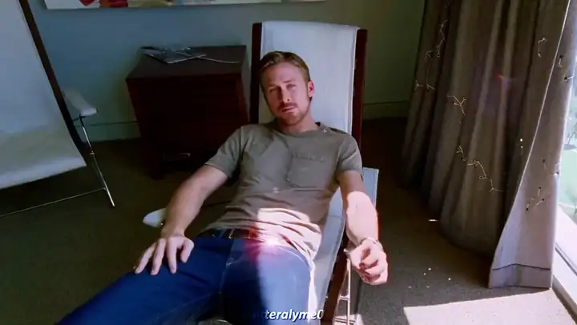
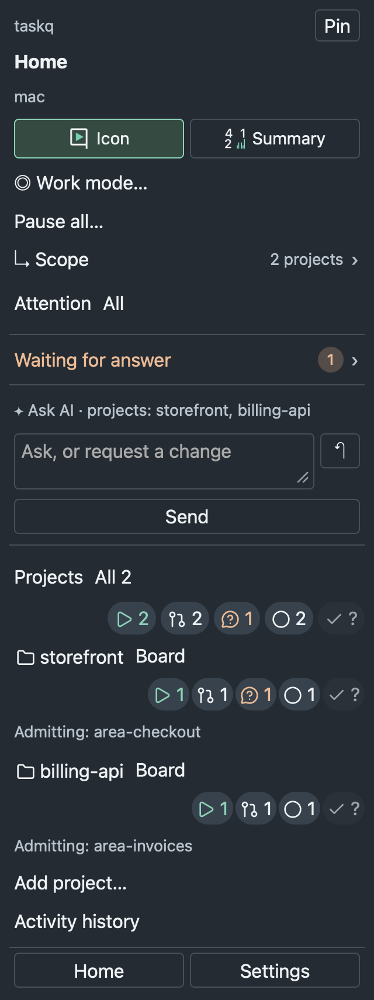
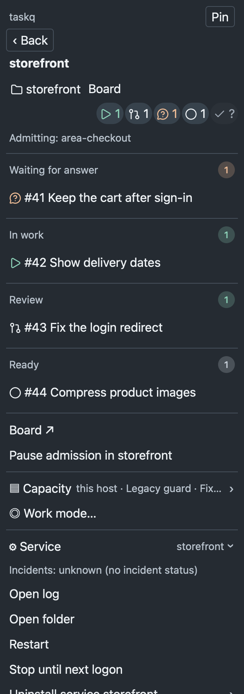

Agents working.
Install taskq from https://github.com/taskqorg/taskq and set it up for this project.
Paste into Claude or Codex; the agent confirms setup changes, installs taskq, connects the board and becomes the manager.
For a new project:
Install taskq from https://github.com/taskqorg/taskq and create project <name> from <idea or folder>.
Your repository board is the task list; your usual AI apps do the work.
What you get
- Tasks are issues on GitHub or GitLab.
- The service runs Claude or Codex workers within each computer's configured limits.
- A worker's question waits for your answer.
- A reviewer checks the result; accepted work publishes through the configured branch or PR route.
- The tray menu shows questions, admission controls and a day's history.
- Several computers share one board.



Use cases
| You want |
Say to the manager |
What happens |
| A task done · UC-02 |
File a task: fix the login redirect. |
An issue records the agreed goal and acceptance; an eligible service picks it up within limits. |
| A new task done first · UC-04 |
File it as p0. |
The task gets priority 0, ahead of ordinary tasks within limits. |
| A plan broken up · UC-07 |
Split this plan into tasks. |
Agreed tasks stay held until you start them; dependencies wait for their predecessors to close. |
| To answer a worker · UC-09 |
Answer #12 with 2. |
Your choice is posted to the current question on #12. |
| A quiet day · UC-13 |
Pause the service. |
New worker admission pauses for this project; running attempts continue. |
| To mix agents · UC-02 |
Use Codex for the visuals. |
The new visual task selects Codex; other tasks keep their configured agents. |
Agents: install, setup, commands and development are in taskq.md.
Verify a downloaded release file: check it against the release's SHA256SUMS (shasum -a 256 -c SHA256SUMS --ignore-missing),
then trace it to the workflow run that built it with gh attestation verify <file> --repo taskqorg/taskq.
License: MIT.
If taskq saves you time, buy me a coffee.